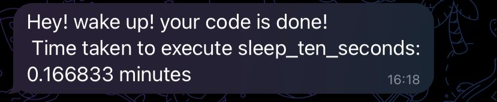

Back to sit! üêí
Had you ever went for a break meanwhile your model/code is running? Yeah! right? But it is very upset when you have to return to your computer every 5 minutes to see if your code is still running! üò¥ Maybe you were resting in your bed and you have to wake up to check it out! what a bother! üò§ What about if you get notified to your phone once your code has run?
Back to sit does this for you! Back to sit library notify directly to your telegram chat just when your job is done! and also report you the time took to accomplish the task.
Installation
To install back_to_sit library you can use pip:
pip install back-to-sitUsage
Using the Back to Sit library is easy. First, you need to create a Telegram bot and obtain an API token. You can follow the instructions on the Telegram website to create a bot and obtain an API token (or easily read the instructions below). Lastly, you need to obtain your chat id.
Here I will show you how to get both:
API Token ü§ñ
First you need to create your own bot ü§ñ. This bot will be your messenger! üíå
To create it, follow the next steps:
- Install Telegram in your smartphone
- Go to Chats → Search Chats → Type BotFather
- There to create your bot you can simply follow the instructions. But it should be something like this:
/newbot
bot_name # You choose this
examplebot_bot # You choose this- Finally, get the token API that BotFather bring to you. Nice! As simple as that you have your API token
Chat ID
Now, you will create a “universal” bot, it means that anyone could chat with him/her. So you need to correctly identify the chat between the bot and you! To do this follow the steps:
- Search your bot. In telegram go to Chats → Search Chats → Type the username of your bot (Ex: examplebot_bot) and enter to the chat.
- Write a dummy message to the bot. (For example, ”Hello world”)
- In your navigator, enter to
https://api.telegram.org/bot{TOKEN_API}/getUpdates. Replace {TOKEN_API} with your API token. - Here you will see a payload with the messages, from the payload you should just get the “id” number.
Payload Example:
{"ok":true,"result":[{"update_id":9421735642,
"message":{"message_id":3,"from":{"id":6276864755,"is_bot":false,"first_name":"Diego","last_name":"Machado","language_code":"es"},"chat":{"id":6276864755,"first_name":"Diego","last_name":"Machado","type":"private"},"date":1682916041,"text":"Hello World"}}]}In the example case, the chat_id is 6276864755
üëÄ If you get something like {‚Äúok‚Äù:true,‚Äúresult‚Äù:[]}. Try to send more messages and reload the step 3.
Well Done! üöÄüöÄüöÄüöÄüöÄ
Once you have the API token and the chat id, you are already done to use back to sit! You have two available options, use the back_to_sit()function or use the @back_to_sit_decorator(). We will navigate through them a little bit in the following sections:
Function mode üî®
This mode is useful when you are running tasks in your Jupyter notebook and don’t want to alter your function behavior.
You can use back_to_sit() function mode in your code like this:
# Import Libraries
from back_to_sit import back_to_sit
import time
# Define necessary constants
MESSAGE = "Hey! wake up! your code is done!"
CHAT_ID = "CHATIDNUMBER"
API_TOKEN = "API:TOKEN"
# Start time is optional if you want backtosit to report the time consumed
start_time = time.time()
# Some task code here ...
time.sleep(10)
####
# This line is executed after your task code is done!
back_to_sit(MESSAGE, CHAT_ID, API_TOKEN, start_time, notebook = False)
üëÄ Important! If your are running it in Jupyter notebooks, you should give the input parameter notebook=True , otherwise you should do notebook=False
Decorator mode ✨
This mode is useful when you want to get the back to sit report every time you use the function! or maybe if don’t want to add an extra line of code!
You can use back-to-sit decorator mode in your code like this:
# Import Libraries
from back_to_sit import back_to_sit
import time
# Define necessary constants
MESSAGE = "Hey! wake up! your code is done!"
CHAT_ID = "CHATIDNUMBER"
API_TOKEN = "API:TOKEN"
@back_to_sit_decorator(MESSAGE, CHAT_ID, API_TOKEN, notebook = False)
def sleep_ten_seconds():
time.sleep(10)
return NoneIn the decorator mode, the start time is configured automatically. So every time you execute the function you will get the back to sit report!
go_sleep = sleep_ten_seconds()
üëÄ Important! If your are running it in Jupyter notebooks, you should give the input parameter notebook=True , otherwise you should do notebook=False
License
The Back to Sit library is licensed under the MIT license. See the LICENSE file for more information.